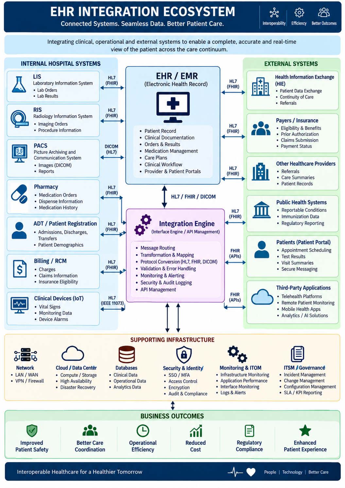

Selected Transformation Program
EHR Integration & Healthcare Interoperability
🏥 Domain: Healthcare – Payer & Provider
💼 Role: Program / Project Manager
🔗 Focus: EHR Integration, Interoperability & Clinical Data Exchange
🧩 Integration: EHR / EMR, HL7, APIs & Healthcare Platforms
Business Challenge
Healthcare organizations operate across multiple clinical,
payer, provider and enterprise platforms. Clinical and
administrative information often needs to move securely
between Electronic Health Record (EHR) systems and
downstream healthcare applications.
The EHR integration program established a structured
interoperability framework to connect EHR platforms with
healthcare products, clinical applications, payer/provider
systems and enterprise services while supporting data
consistency, security, traceability and reliable clinical
workflows.
Program Scope
- Assess existing EHR systems, interfaces and integration dependencies.
- Define the target EHR integration architecture and interoperability model.
- Integrate patient, provider, encounter, clinical and administrative information.
- Design and manage HL7-based healthcare interfaces.
- Implement REST/API-based integrations where appropriate.
- Coordinate data mapping, transformation and validation.
- Manage integration development, testing and deployment.
- Coordinate EHR vendor and healthcare platform teams.
- Establish monitoring, error handling and reconciliation processes.
- Manage production Go-Live, Hypercare and operational transition.
Business Objectives
- Enable reliable exchange of clinical and healthcare information.
- Reduce manual data entry and duplicate information across systems.
- Improve availability of relevant patient and clinical information.
- Support payer and provider workflows through integrated data.
- Improve interoperability between EHR and healthcare applications.
- Establish reusable integration patterns for future healthcare products.
- Improve integration visibility, monitoring and operational support.
EHR Integration Architecture
The integration architecture connects EHR/EMR platforms with
healthcare applications, payer and provider systems and
enterprise services through controlled interoperability,
API and messaging patterns.

EHR Integration – Healthcare Interoperability Architecture
Architecture Components
- EHR / EMR Platform: Source or destination for patient, encounter, clinical and administrative information.
- Integration Layer: Healthcare integration services for routing, transformation, orchestration and interface management.
- HL7 Interfaces: Messaging-based exchange for clinical and administrative healthcare information.
- REST APIs: API-based integration for modern healthcare applications and services.
- Data Transformation: Mapping, validation and transformation between source and target data structures.
- Integration Monitoring: Interface health, message status, failures, alerts and operational dashboards.
- Error Handling: Exception queues, retries, reconciliation and controlled reprocessing.
- Security: Authentication, authorization, encryption and controlled access to healthcare information.
- Auditability: Traceability of interface transactions and integration events.
- Downstream Platforms: Healthcare products, payer/provider systems, analytics and enterprise applications.
Integration Lifecycle
01 — Discovery & Assessment
- Inventory EHR systems, interfaces, applications and integration dependencies.
- Identify clinical and business workflows requiring integration.
- Assess existing HL7 interfaces, APIs and integration processes.
- Identify data-quality, interface and operational risks.
- Define integration scope and business priorities.
02 — Requirements & Integration Design
- Define functional and non-functional integration requirements.
- Document source-to-target data flows.
- Define message structures, mappings and transformation rules.
- Define API contracts and integration patterns.
- Establish security, privacy, audit and operational requirements.
03 — Build & Configuration
- Coordinate interface and API development.
- Configure integration routes and transformation logic.
- Implement validation and business rules.
- Establish error handling and retry mechanisms.
- Coordinate EHR and downstream application configuration.
04 — Integration Testing
- Execute interface and API testing.
- Validate message structure, mapping and transformation.
- Perform positive and negative scenario testing.
- Validate exception handling and reconciliation.
- Coordinate end-to-end clinical workflow testing.
05 — UAT & Clinical Validation
- Coordinate User Acceptance Testing with healthcare stakeholders.
- Validate clinical and operational workflows.
- Confirm data accuracy and completeness.
- Track defects and business clarifications.
- Obtain business and stakeholder sign-off.
06 — Cut-Over & Go-Live
- Establish production cut-over plan and deployment sequence.
- Coordinate EHR, integration and downstream application teams.
- Complete production readiness and Go/No-Go assessment.
- Execute deployment and validate critical interfaces.
- Monitor clinical workflows following production activation.
07 — Hypercare & Stabilization
- Establish enhanced post-Go-Live monitoring.
- Monitor interface failures, latency and message processing.
- Coordinate incident triage and resolution.
- Validate reconciliation and data consistency.
- Transition stabilized interfaces to BAU operations.
08 — Continuous Improvement
- Analyze interface performance and recurring issues.
- Improve integration reliability and monitoring.
- Identify opportunities for API modernization and automation.
- Introduce reusable healthcare integration patterns.
- Maintain the interoperability roadmap.
Healthcare Data & Interoperability
- Patient demographics and identifiers.
- Provider and organization information.
- Encounters and appointments.
- Clinical observations and results.
- Diagnoses and conditions.
- Medications and medication-related information.
- Allergies and clinical history.
- Orders and clinical activities.
- Care plans and care-management information.
- Claims and payer-related information where applicable.
Integration Governance
- Integration architecture and design governance.
- Interface inventory and dependency management.
- Data mapping and transformation governance.
- Security, privacy and access governance.
- Interface testing and quality governance.
- Change and release governance.
- Production readiness and Go/No-Go governance.
- Interface monitoring and operational governance.
- Incident, problem and root-cause management.
Program Manager – Roles & Responsibilities
- Program Planning: Define integration roadmap, milestones, scope, dependencies and delivery governance.
- Stakeholder Management: Coordinate EHR vendors, clinical teams, product teams, engineering, QA, security and business stakeholders.
- Architecture Governance: Coordinate solution architecture, integration patterns and technical decisions.
- Data Governance: Manage data mapping, quality, validation and reconciliation activities.
- Delivery Management: Coordinate development, testing, UAT, deployment and production transition.
- Risk Management: Manage integration, clinical workflow, security, data and operational risks.
- Release Management: Govern integration releases, cut-over planning and production readiness.
- Incident Governance: Coordinate critical interface incidents and service restoration.
- Vendor Management: Manage EHR and integration technology partners.
- Operational Transition: Establish monitoring, support procedures, runbooks and knowledge transfer.
Healthcare Technology Landscape
- EHR / EMR Platforms
- HL7 Interfaces
- REST APIs
- Healthcare Integration Engine
- Clinical Applications
- Payer & Provider Platforms
- Care Management Systems
- Healthcare Data Platforms
- Cloud Platforms
- API Management
- Monitoring & Observability
- CI/CD and DevOps
Key Integration Metrics
- Interface availability and uptime.
- Message processing success rate.
- Interface error and exception volume.
- Message processing latency.
- Data reconciliation accuracy.
- Critical interface incident volume.
- Mean Time to Detect and Resolve integration issues.
- UAT completion and business sign-off.
- Production release stability.
- Post-Go-Live defect and incident trends.
Transformation Outcome
Established a structured EHR integration and interoperability
capability connecting clinical systems, healthcare products,
payer/provider platforms and enterprise applications through
governed HL7, API and integration patterns, supported by
testing, monitoring, operational readiness and continuous
improvement.
Program Management Takeaway:
EHR integration is both a technology and healthcare workflow
transformation. Successful delivery requires alignment across
clinical processes, data, interoperability, security, integration
architecture, testing, stakeholder adoption and production
operations.